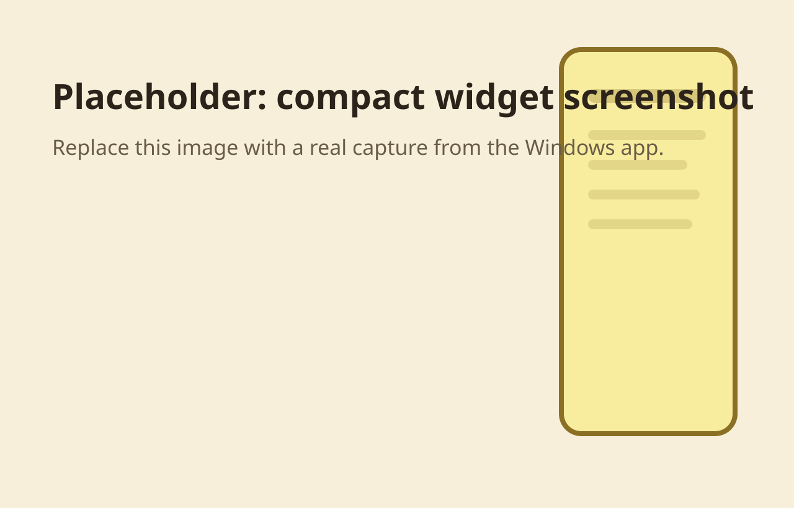
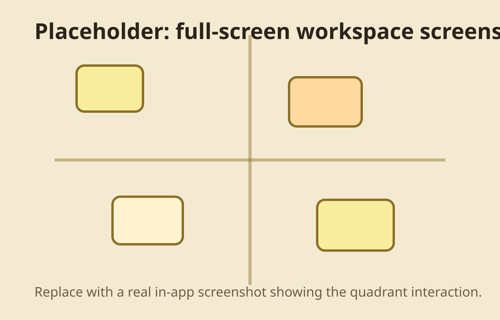

1. Compact sticky widget
The app lives in the top-right corner as a compact note list. It stays available without taking over the whole screen.
Desktop Application
A Windows desktop task tool that starts from a compact sticky-note widget and expands into a full-screen four-quadrant workspace.
Core Interaction Model
The app lives in the top-right corner as a compact note list. It stays available without taking over the whole screen.
Left-click expands into an Eisenhower-style workspace for urgent-important placement, visual sorting, and focus decisions.
Tasks become cards, can be dragged and marked, and are written back into the sticky list with local persistence on restart.
Screenshots
The repository does not yet contain captured in-app screenshots. Two placeholders below should be replaced with real captures later.


Distribution
This page is published as a static showcase under the repository project path /Sticky-Quadrant/.
Tagged releases build Windows artifacts in GitHub Actions and attach the installer and portable executable to each Release.
Author
Author: Zhang Erben